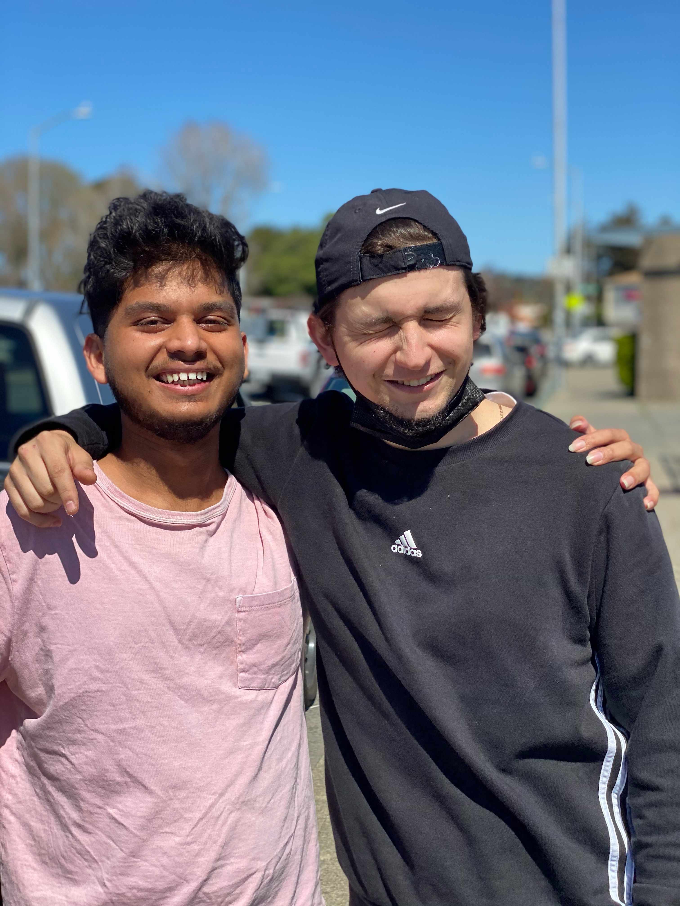
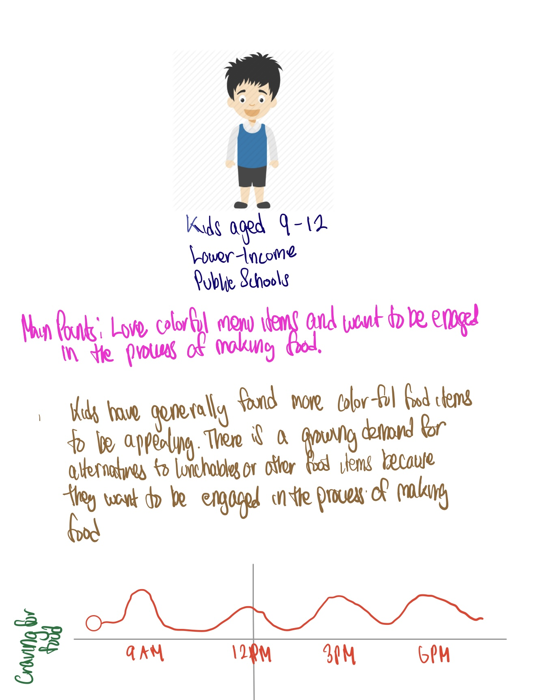
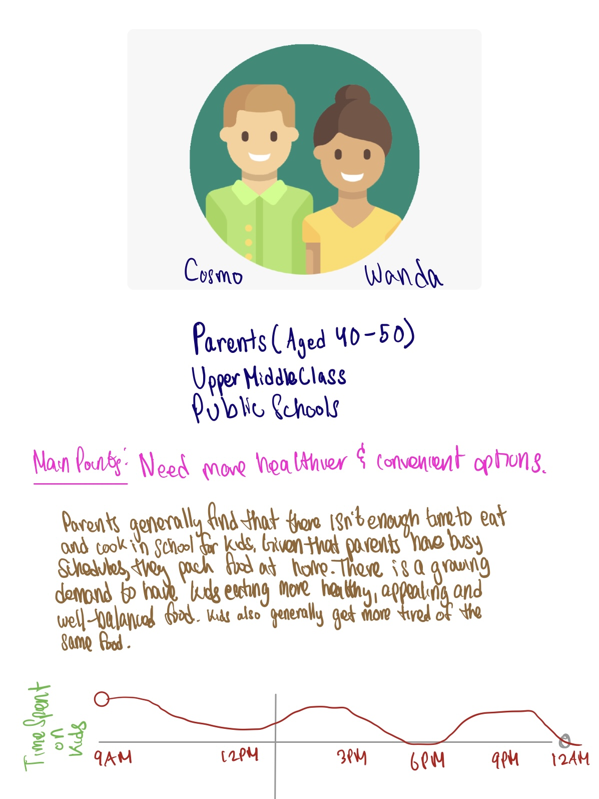

POG: How might we make the process of making homemade school lunches an independent activity for young school-aged children?
In order to understand our stakeholders, we need to directly interact with them. In doing so, I found that it allows us to create better products. At the moment when interviewing stakeholders, our primary goal was to understand what products or services might our market needs.
I love interacting with people. I took this assignment as an opportunity to reconnect with family members and friends that I've lost touch with. I spoke with my uncle from Nepal about the group project to receive some insightful feedback about what customers might want. In doing so, we could get a better understanding of what features our product would need. I love talking to people and listening to their stories so I found that this was a great way to bond with them over a short phone call.
To complete our activity, we needed to develop user personas that could tell stories of our potential customers.
I believe that the only way we can develop a strong product is by telling stories. After I looked at similarities between a group of stakeholders, I developed the user personas from the interviews conducted by my team. In this process, I found that there since our customers wanted a lot of key attributes to help lower the time it took to prepare a kid's meal. I communicated with my group that it would be difficult to solve all of the listed problems therefore, we should only identify problems for a specific submarket. Creating user personas taught me how to tell great stories and helped me understand that the nicher the market, the better the product.


